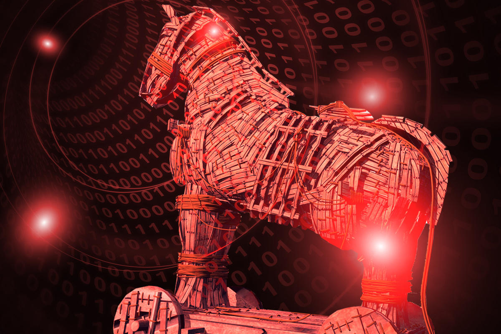

Что это?
Троянские программы, или троянцы, – это вредоносные программы, которые нередко маскируются под легитимное ПО. С их помощью злоумышленники пытаются получить доступ к системе пользователя. Используя методы социальной инженерии, злоумышленники обманом уговаривают пользователя загрузить троянца на устройство и запустить его. После активации троянские программы начинают шпионить за пользователем, крадут его данные и открывают злоумышленнику потайной вход в систему.
Суть работы
Они работают по следующему принципу: вы запускаете файл, содержащий троян, он прописывается в автозагрузке и каждые 10-15 минут проверяет наличие соединения с Интернетом. Если соединение установлено, троян отсылает своему хозяину сигнал готовности и начинает работать по принципу приложения удаленного доступа. С этого момента злоумышленник может совершить любые действия с вашим компьютером, вплоть до форматирования диска.
